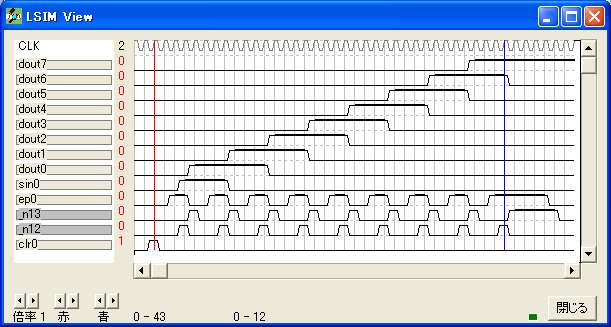

{ =============================================== }
{ シフトレジスタ }
{ =============================================== }
logicname sample
{ =============================================== }
{ 実効譜 }
{ =============================================== }
entity main
input clr;
input ep;
input sin;
output dout[8];
bitr pg[2];
bitr regdout[8];
if (!clr)
if (ep)
if (pg==0)
pg=1;
else
pg=2;
endif
else
pg=0;
endif
endif
if (!clr)
if (pg.0)
regdout=regdout>>1;
regdout.0=sin;
else
regdout=regdout;
endif
endif
dout=regdout;
ende
{ =============================================== }
{ 機能実行譜 }
{ =============================================== }
entity sim
output clr;
output ep;
output sin;
output dout[8];
bitr tc[6];
part main(clr,ep,sin,dout)
tc=tc+1;
if ((tc>3)&(tc<9)) sin=1; endif
switch(tc)
case 1: clr=1;
case 3: ep=1;
case 4: ep=1;
case 7: ep=1;
case 8: ep=1;
case 11: ep=1;
case 12: ep=1;
case 15: ep=1;
case 16: ep=1;
case 19: ep=1;
case 20: ep=1;
case 23: ep=1;
case 24: ep=1;
case 27: ep=1;
case 28: ep=1;
case 31: ep=1;
case 32: ep=1;
case 35: ep=1;
case 36: ep=1;
case 37: ep=1;
case 38: ep=1;
case 39: ep=1;
case 40: ep=1;
endswitch
ende
endlogic
